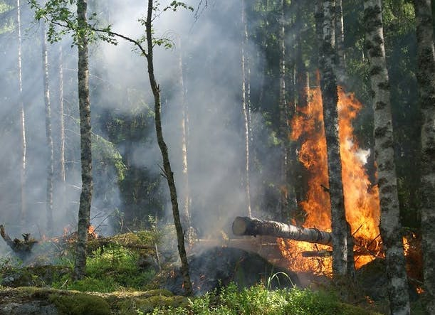

Autumn 2017 & Winter 2018 Hours of Operation
The Capitol Reef National Park visitor center operating hours will be 8:00 am to 4:30 pm daily starting Monday, October 23, 2017. Extended hours will resume in summer 2018. The visitor center will be closed on major holidays...Read More
Minuteman Missile National Historic Site Exhibit Area to Close For Repairs
From October 19-30, the exhibit area and theater at Minuteman Missile National Historic Site's visitor center will be closed to allow for a number of needed repairs to be conducted to the exhibits. During the closure of exhibit area, public services will be maintained at the visitor center from 8:00 a.m. to 4:00 p.m. mountain time, daily. The information desk, bookstore, and restrooms will all remain open.Read More

Devils Tower Plans Prescribed Fire
Devils Tower National Monument will implement a prescribed burn this fall as conditions permit. Fire management officials from the Northern Great Plains Fire Office and Devils Tower National Monument plan to burn 171 acres in the North Terrace Unit during the next few weeks.Read More
Mountain Lion Found Dead in Verdugo Mountains
THOUSAND OAKS, Calif. -- The mountain lion known as P-41 was found dead yesterday on the edge of the Verdugo Mountains, near the Shadow Hills neighborhood.Read More